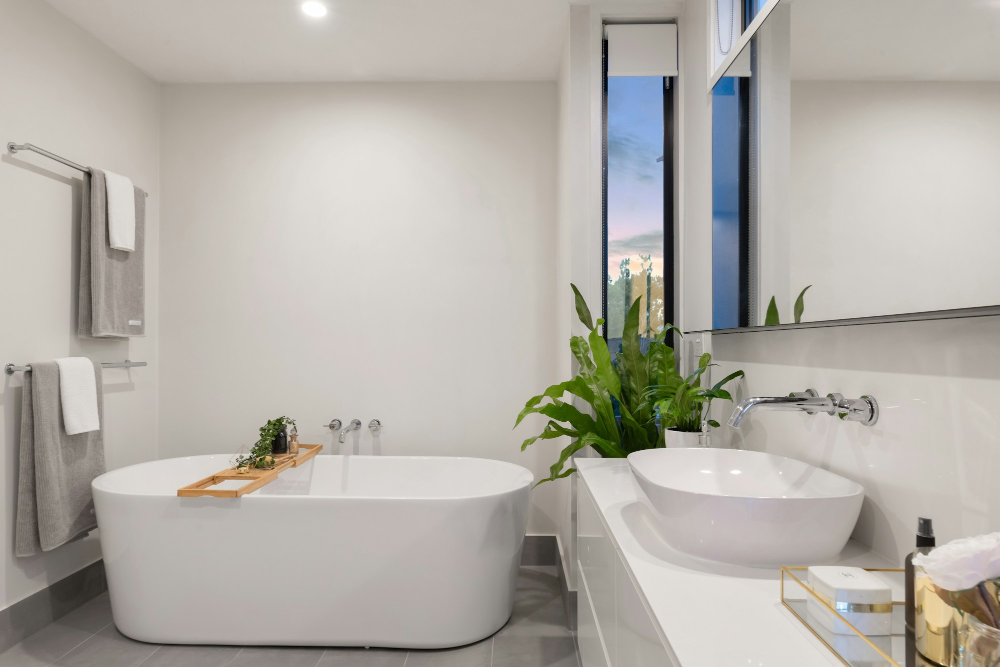

We listen first.
Tell us what’s working, what isn’t, and what you have in mind. We take time to understand the home before recommending the work.
GOOD HOMES START WITH GOOD WORK.
Expert plumbing, thoughtful heating and beautifully fitted bathrooms. For homes that deserve care, inside and out.
Let’s talk about your home
THE ART OF FEELING AT HOMEA HOME THAT WORKS BEAUTIFULLY
From a persistent leak to a complete first fix. Careful diagnosis, neatly planned pipework and practical solutions that respect your home.
Discuss plumbing workHeating upgrades, radiator installations and hot water systems planned around how your household lives. We begin with the space, the system and your priorities.
Discuss your heatingFrom the first pipe to the final fitting: installation of showers, baths, taps and sanitaryware, with careful coordination of tiling and finishing trades.
Plan a bathroomPlanned maintenance, small repairs and considered upgrades. A clear scope of work before we start, and a clean, checked space when we leave.
Arrange home careTHE FINISH WE WORK TOWARDS
A visual direction for your next project.
Illustrative interiors, selected for this concept.
THE VALE APPROACH
A considered service should feel reassuring from the first conversation to the final check.
Tell us what’s working, what isn’t, and what you have in mind. We take time to understand the home before recommending the work.
A site visit, an agreed scope and a written quotation. You know what’s included and how the work will fit around you.
Protected surfaces, tidy workmanship and careful testing. We walk you through the completed work and how to look after it.
BEFORE WE BEGIN
Yes. This concept service is built around collaboration, from reviewing specifications to coordinating first fix and final installation.
No. The enquiry can cover a repair, a heating upgrade or an individual bathroom fitting, as well as a larger project.
The demo is positioned for London and the Home Counties. A real service area would be confirmed before a visit is arranged.
LET’S MAKE YOUR HOME WORK BETTER
A small fix or a fresh start.
Every good project begins with a conversation.
An Ivory Digital concept website.
This demo form previews the enquiry experience; it does not send a booking.